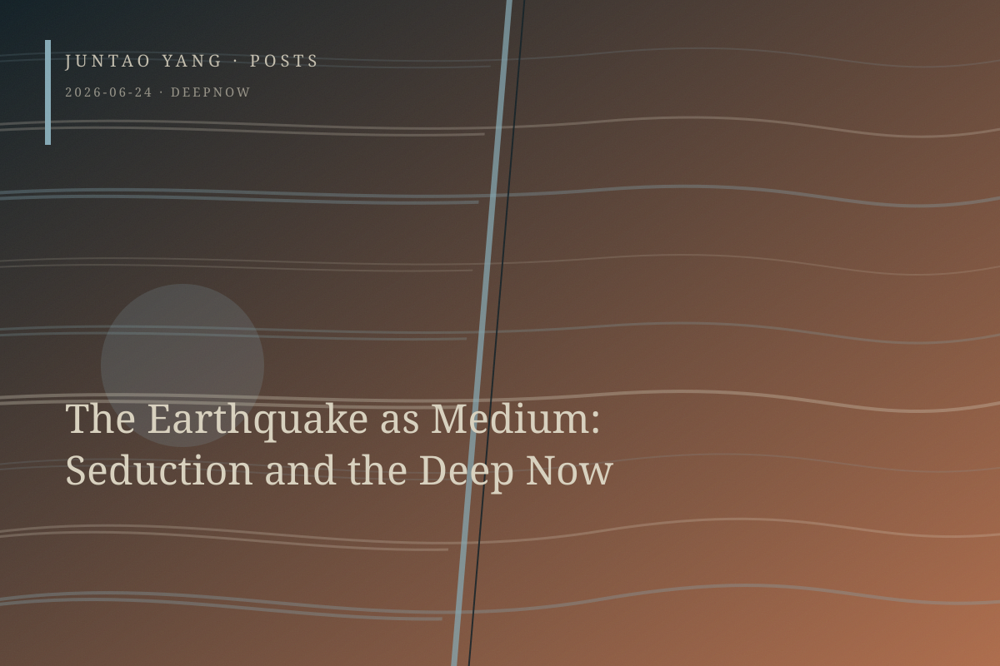

<content>
More than a decade has passed since the Wenchuan earthquake. Why does it continue to conscript new subjects into relation with it? Why are survivors and artists unable to stay away? What is the structure of this compulsion? I propose that we understand the Wenchuan earthquake as a medium: in a matter of seconds, it produced irreversible material and affective reconfigurations, and through the singular temporal and political structure I call the “deep now,” it continues to conscript and undo subjects. In a queer register, I name this mediating force seduction.
The textual and experiential ground of my project—as well as its wager—is contemporary Chinese film and visual art, but the argument is situated at the intersection of three subfields: media theory, the environmental humanities, and queer theory. Media theory asks how events constitute subjects and conditions of perception through material processes of mediation. Queer theory complicates our accounts of temporality, subjectivity, and desire. The environmental humanities, meanwhile, turns toward encounters, contacts, and contaminations with strangers who are unknown and potentially dangerous. All three are activated in post-Wenchuan visual art.
The earthquake’s operation and withdrawal occur in the same instant. This temporality of collapse is catastrophic rather than progressive, repetitive rather than linear, haunting rather than resolved; it therefore calls for queering. The temporality of collapse and the political work of erasure constitute a double withdrawal, turning the event into a black hole in several senses at once. Within this deep now, we cannot finish with the earthquake because the event is neither fully present nor fully absent. Seduction names its force. It cannot be reduced to the aesthetic consumption of the sublime or to the ethical obligation of moral impulse; it is a constitutive power that undoes the subject’s self-sufficiency. Queering geological temporality also entails a de-sovereignized mode of writing. Moral impulse presupposes a sovereign ethical subject who decides to act; seduction disintegrates that subject. Disaster seizes it.
How to bring together a cold, post-Kittlerian media ontology, a queer theory that affirms desire, and an ethics that confronts the Other remains an open problem. One possible answer is that the absolute power of media in the Kittlerian sense—the disintegration of the sovereign subject—is precisely the ontological precondition for Levinasian openness to the Other. When the subject collapses, presubjective potentiality has no choice but to stand exposed before the face of the Other. This is also how queer ecology understands desire: as an unpredictable intimacy with strange strangers. In close readings, ruins and remnants become material inscriptions of absence, and their indexicality makes memory unbearable. Presence, in turn, means entanglement in a porous and vulnerable intimacy with those who have been lost.
The writer must acknowledge having been seduced by Wenchuan, like the artists who return there again and again. Acknowledgment alone is insufficient. The writer must articulate the intellectual’s complicity in representing suffering and the asymmetry involved in writing the deaths of subaltern others. Writing requires a self-shattering—a queer desire that is neither sadistic nor masochistic—in which the boundaries of the self dissolve as it is drawn toward absence, like an earthquake. This jouissance can redeem nothing material for the dead. It is a condition of powerlessness and loss of control.
</content>
June 24, 2026
The Earthquake as Medium: Seduction and the Deep Now
The Wenchuan earthquake persists as a medium that recruits and undoes subjects within a deep now, exerting a force that can be understood as seduction.
